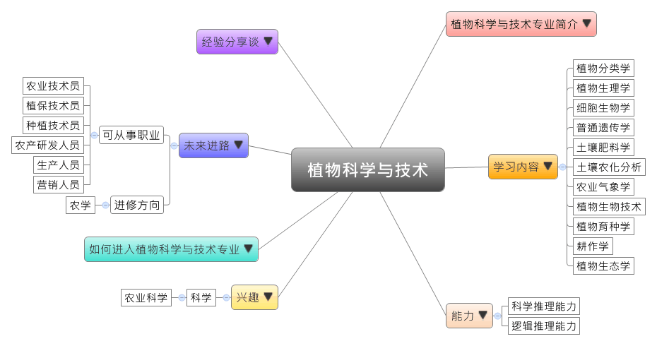

- 专业大观园
-

- 专业介绍
-
什么是植物科学与技术？
植物科学与技术专业结合了传统农业生产技术与现代生物技术，这个新兴的专业涵盖传统的农学、园艺和植保等内容，在科研和应用上有重大的意义。随着农业技术的高新化、领域扩大化、生产规模化、经营产业化，以及管理信息化的趋势，此专业可以为国家的生态建设、粮食的生产安全、能源结构的调整做出重大的贡献。在职场上，它主要是钻研现代生物技术、植物遗传改良、农业信息技术、植物生产管理、生态环境、植物产品质量安全、植物保护和植物产品贮藏与加工等；在生活上，具备园艺与植保的生态概念，会更能主动地共同维护、推展与改造我们的生活环境。
植物科学与技术专业主要培养熟悉植物科学与技术学科发展理论和应用、国家科学技术、植物生产、生物环境等政策，并具备植物资源开发与利用、生物技术应用、植物产品提取与加工等基本理论、知识和技能。能掌握植物生产、育种和保护的方法与技能，具有优秀的调查研究与决策、试验设计，更能运用现代信息技术与创新能力的研发型高级科技人才。

植物遗传育种实验 
架接植物示范教学
- 学习内容
-
植物科学与技术专业学生主要学习农业生物科学、农业生态科学、农业经济和管理科学、植物生产学、植物育种学和植物保护学等基本理论和基本知识，接受植物生产、育种和保护事务所需的科研、管理等基本训练，具有植物栽种、植物生产技术开发和推广、农业企业的经营管理等基本能力。
本专业学习方向有生物学、园艺学、作物学，前期主要是基础学习，中期是增强专业知识和实践技能的训练，后期则是依据学生的素质发展与就业需求进行分类培养。。植物科学与技术专业主干课程有：植物分类学、植物生理学、植物生理实验技术、细胞生物学、普通遗传学、土壤肥料学、土壤农化分析、普通微生物学、农业气象学、植物生物技术、植物保护学、植物育种学、耕作学、植物生产学、分子生物学、植物生态学、种子学、植物栽培学。实践教学的项目有植物学、植物分类学、土壤与肥料学、植物生态学、植物保护学、植物育种学、植物生产学、耕作学等实习课程。
本专业可以习得的知识与获得之能力、技能列点：第一、有扎实的数学、物理、化学等基本理论知识，且能掌握生物学科和农业学科的基本理论、基本知识；第二、掌握农业（植物）生产的技能和知识，且熟悉植物生产和科学技术的科学发展趋势；第三、掌握现代农业的规划设计、作物栽培、种质资源保护、品种选育和良种繁育、病虫草害防治、植物产品商品化处理等技术与能力；第四、掌握农业生产、农村工作和与植物生产相关的有关方针、政策和法规。
- 能力
-
植物科学与技术专业学生，需具备以下能力：
相关性向能力 说明 科学推理能力  具备植物生产的知识与技能
具备植物生产的知识与技能
能进行植物品种的选育和优良品种的繁育
了解植物耕作与保护的具体操作方法逻辑推理能力 了解昆虫与病虫草害防治的关联
认识植物生长环境与昆虫、气候等因素的关系创意能力 擅长将各种植物产品商品化
透过资源保护技术提升植物产品的质量
- 兴趣
-
若你对下列活动或事物有高度兴趣，可考虑进入植物科学与技术专业学习：
科学 农业科学 喜欢亲近与认识大自然
对于栽种植物和各种作物感到兴趣
喜欢了解植物相关理论与疾病成因
对于植物产品的生产、制作与推广等活动感到兴趣
- 如何进入此专业
-
下面列举开设植物科学与技术专业的211工程重点大学院校：
- 未来进路
-
可从事职业
我国发展植物科学与技术专业拥有资源上的优势，未来有不少研究型人才的需求。在未来国家生态环境建设及新农村发展中，此专业有相当广阔的发展远景。本专业毕业生可在农业、园林、林业、食品、医药、畜牧等行业从事与植物科学相关的教学与科研、技术推广与开发、经营与管理等；还可在农业院校（大中专）、科研院所、农场、种子公司、农业技术推广部门、涉农企业、国家机关等从事食品、医药、园林、农业、林业、畜牧等与植物科学相关的科学研究与教学、技术推广与开发、生产经营、管理与咨询服务等工作。在工作职场上皆能发挥技术推广与开发、生产经营等专长：
行业 职业 农、林、牧、渔（与种植业有关的企事业单位） 生产人员、营销人员、农业技术员 制药、新能源 研发人员、营销人员 教学和科研部门 研究人员、教师 政府机构 行政人员、农业技术员 进修方向以下列举植物科学与技术专业毕业生可以继续修读之学科门类、一级学科与硕士点：
学科门类 一级学科 硕士点 农学 植物保护植物病理学、农药学、农业昆虫与害虫防治、植物检疫与生态健康、生物防治学、生态安全 作物学作物栽培学与耕作学、作物生理学 林学园林植物与观赏园艺、森林培育、野生动植物保护与利用、森林经理学、森林保护学、林木遗传育种、森林植物资源学 草学草地生物多样性、草地保护学、草地资源利用与保护、饲草遗传育种与种子科学、饲草生产加工及利用
- 经验分享谈
-
以自然之力恢复自然的植物学家——蒋高明
蒋高明，1964年9月出生于山东省。他是中国著名的植物学家，研究兴趣在恢复生态学、植物生理生态学，全球变化生态学，生态系统管理等。在城市生态学领域，蒋高明是国内首次提出并使用“城市森林”和“城市植被”概念的学者，他是国内最早提出“在城市中设计自然”的学者。在恢复生态学领域，蒋高明第一次提出沙地草地生态恢复的“以地养地”模式、“借助自然力”恢复等新观点。其沙地生态治理的新观点更是被誉为“治沙人的创新”2000到2006年间，在内蒙古正蓝旗浑善达克沙地，他与同事共同主持中国科学院退化沙地草地生态系统恢复试验示范重大项目研究，取得了显着的生态、经济和社会效益，严重退化的沙地草地恢复到了上世纪60年代的水平。由于蒋高明的学术路线始终围绕着新农村的建设，于是又被认为是“由生态学唱主角的新绿色革命”的倡导人。【资料来源：蒋高明[EB/OL]. 百度百科】